Antes de chegar aqui.
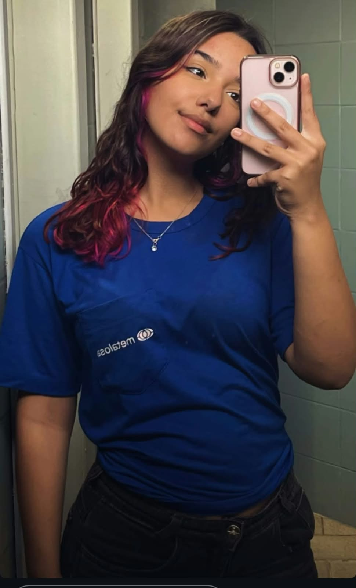
O começo.
O story. Aquele story kkk.
Eu já estava interessado em você há algum tempo, e aquele story acabou me colocando diante de uma decisão:
ou eu criava coragem e começava uma conversa com você, ou continuava só olhando de longe.
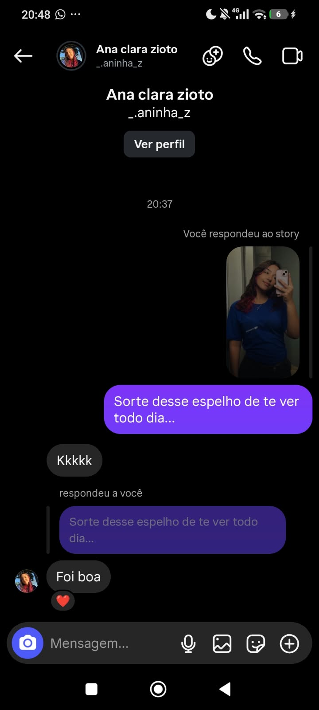
Quando tudo começou a mudar.
E, apesar do medo, eu decidi tentar.
Mandei uma cantadinha descontraída kkk, sem saber muito bem onde aquilo ia dar.
Só que eu descobri que você também estava esperando uma atitude minha.
E foi assim, de um jeito simples e inesperado, que nós começamos a nos corresponder.

O primeiro "eu te amo". ❤️
E pensar que você vivia dizendo q ia se segurar kkk
Mas tem momentos e coisas na vida em que não conseguimos segurar o coração, e o nosso amor é um deles.
Acho que foi aí que ficou ainda mais claro que o "nós" não era só uma brincadeira.

Finalmente, pessoalmente.
Depois de tanta conversa, finalmente chegou o momento de estar ali com você de verdade.
E não vou negar, eu me apaixonei novamente por você no instante em que te vi.
E estar juntos pessoalmente foi muito melhor do que eu tinha imaginado.
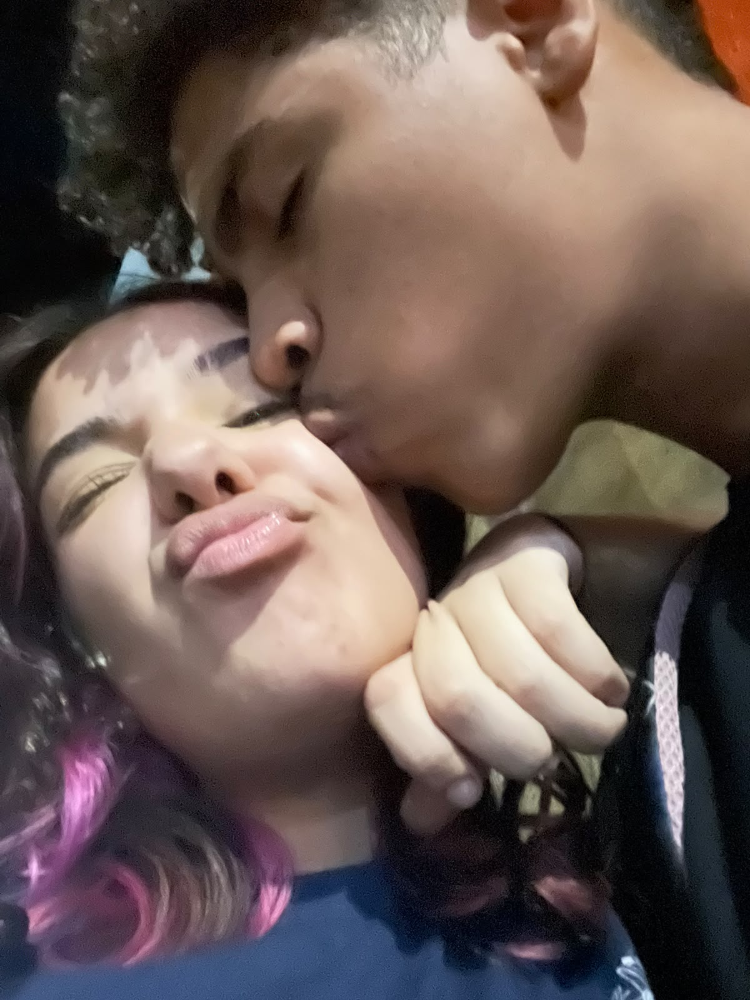
O primeiro beijo. ❤️
E então aconteceu.
Depois de tanta espera (e vontade kkk), rolou nosso primeiro beijo.
Eu não tenho uma foto dele em específico, mas acho que nem precisava.
Aquele momento ficou marcado pra gente, porque de certa forma,
foi o que “consumou” o amor que a gente já sentia.
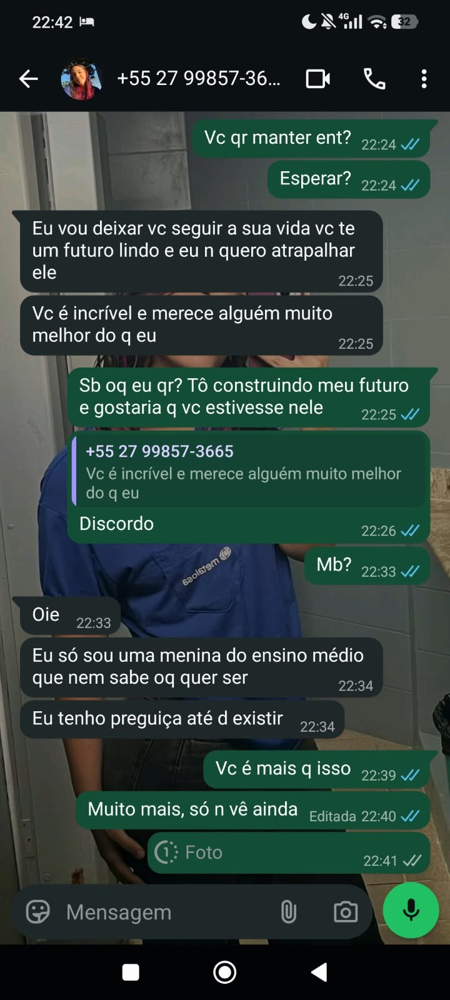

Teve uma hora em que quase não chegamos até aqui.
Com tudo dando tão certo, eu acabei me empolgando demais e estava te pressionando muito.
Você me pediu um tempo pra pensar melhor e, apesar de não ter citado diretamente,
eu entendi seu lado e percebi meu erro. Busquei melhorar essa minha falha porque,
acima de tudo, eu tinha certeza de que queria você.
E quer saber? Esse tempinho fez muito bem pra nós dois, porque aprendemos a lidar melhor um com o outro.
E ainda bem que insistimos, apesar das nossas diferenças.
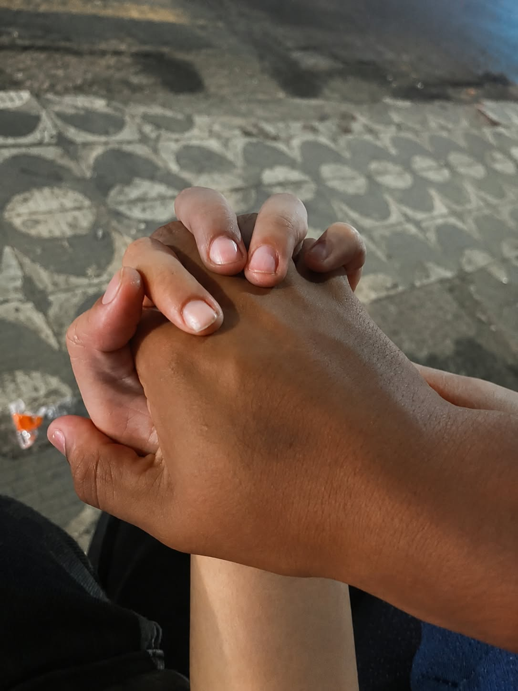
Pequenas coisas.
Depois de tudo isso, nós voltamos e, desde então, tem dado muito certo entre nós.
Passamos por vários momentos juntos, alguns simples, outros nem tanto, mas todos muito importantes pra mim.
E acho que é justamente isso que eu mais gosto na nossa história: perceber que, mesmo nas coisas mais simples,
a gente consegue criar momentos que eu quero guardar pra sempre.
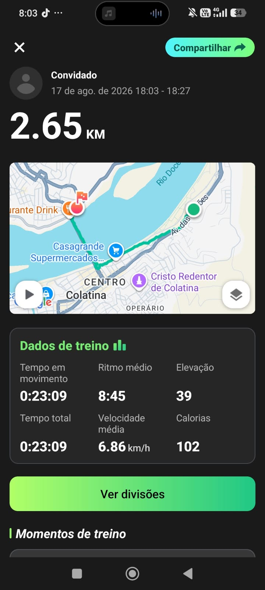
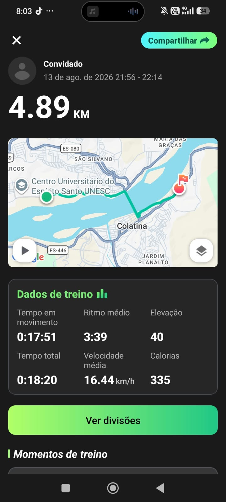
Olha o tanto que eu andava por você kkk
Talvez olhando assim pareça só um caminho no mapa. Mas eu lembro de cada vez que fiz esse caminho só porque queria te ver. E, por mais longe que fosse, eu ia feliz, porque sabia que no final dele estaria você. E, sinceramente? Eu faria tudo de novo.
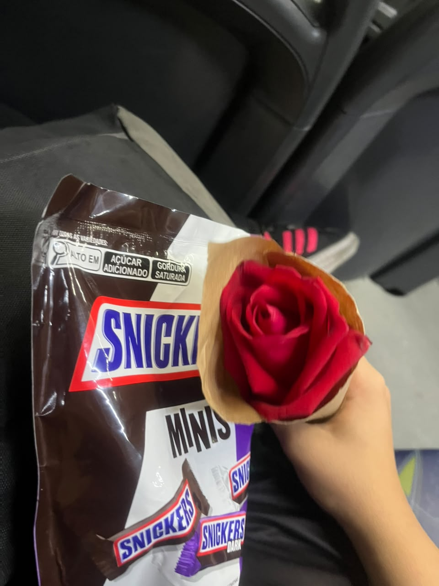
O primeiro presente. 🎁
Talvez tenha sido uma coisa simples, mas fiz tudo com muito carinho.
Lembro do seu sorriso e da alegria que você ficou quando recebeu.
E também da tristeza quando você perdeu a cartinha, mesmo não tendo sido culpa sua. KKKK
Eu faria tudo de novo, e ainda vou fazer, só pra ver aquele sorriso mais uma vez.
Afinal, você merece sempre o melhor. ❤️
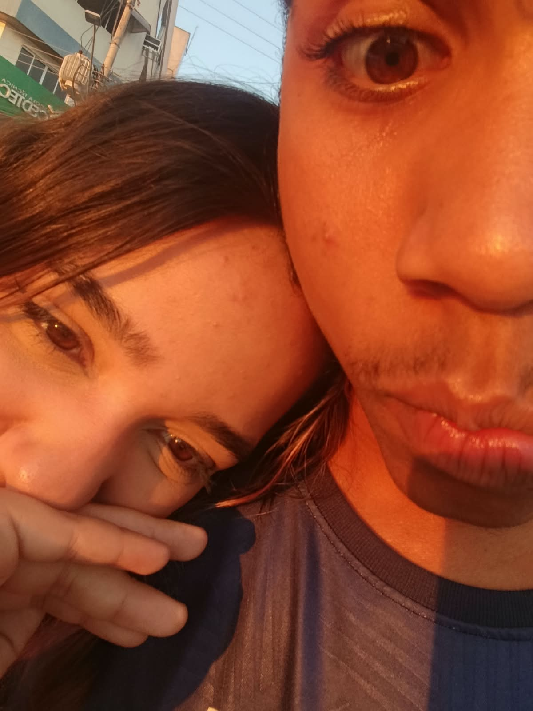
Um pôr do sol com você.
Acho que eu já gostava de pôr do sol antes de você.
Mas depois daquele dia, ele ganhou um significado diferente, pois agora sempre penso em você quando o vejo.
Estar ali com você, vendo o céu mudar de cor enquanto a gente conversava e aproveitava aquele momento juntos, foi simplesmente especial.
Talvez fosse só mais um pôr do sol.
Mas estar com você deixa tudo melhor.
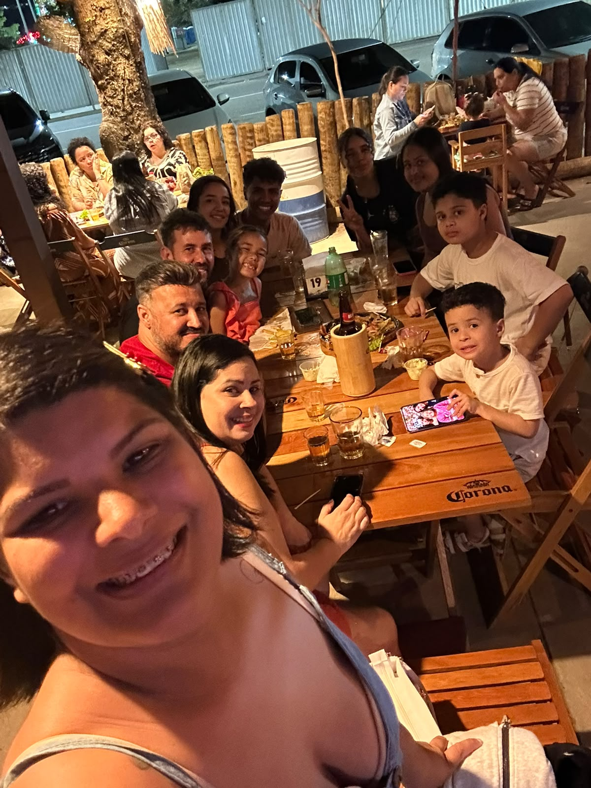
Quando conheci sua família.
Acho que esse foi um daqueles momentos que mostraram que a gente estava ficando cada vez mais sério.
Conhecer e ser aceito por sua família foi importante pra mim, porque eu sabia que estava conhecendo não só você,
mas também um pouco mais do mundo que faz parte da sua vida.
E, confesso, eu estava nervoso pra caramba kkkk
Eu não vou ficar mencionando nossos pegas por aqui, tanto por respeito a quem estiver lendo quanto pra manter o clima romântico desse site. KKKKK
Mas nós dois nos lembramos muito bem deles... não é, meu bem? 👀❤️
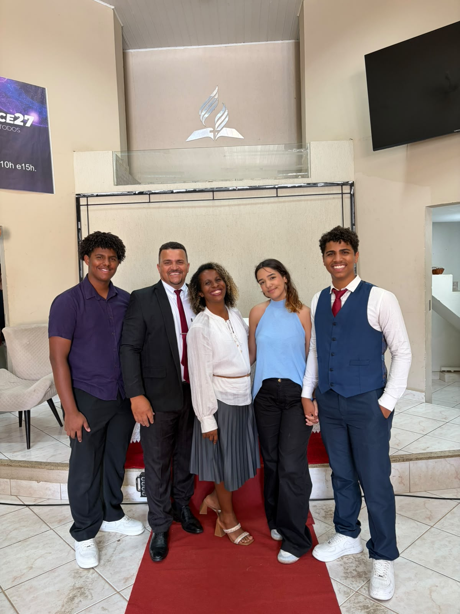
Nossos Sábados
Se tem uma coisa que eu comecei a gostar ainda mais depois que te conheci, foram os nossos sábados.
Cada um teve sua própria história, suas conversas, risadas e momentos que talvez parecessem simples,
mas que significaram muito pra mim.
Além dos pegas, claro kkk.
E pensar que já tivemos mais de um... e espero que ainda venham muitos outros.
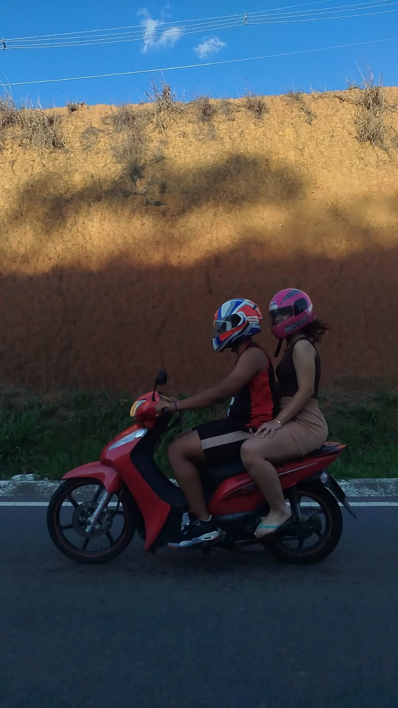
Um susto que eu nunca vou esquecer.
Esse definitivamente não foi um dos momentos que eu planejei guardar. KKKK
Mas foi um daqueles momentos que mostraram muito sobre nós.
Mesmo com todo o susto, o medo e tudo que aconteceu, ter você ali comigo, realmente me apoiando, e ver que estava tudo bem com você foi o que realmente importou.
No fim, essa situação me deu ainda mais certeza de que era você que eu queria pra sempre na minha vida.
Afinal, na primeira vez que você andou de moto comigo, depois de tudo aquilo, você ainda continuou do meu lado e disse que andaria comigo de novo.
E acho que isso já diz muita coisa.
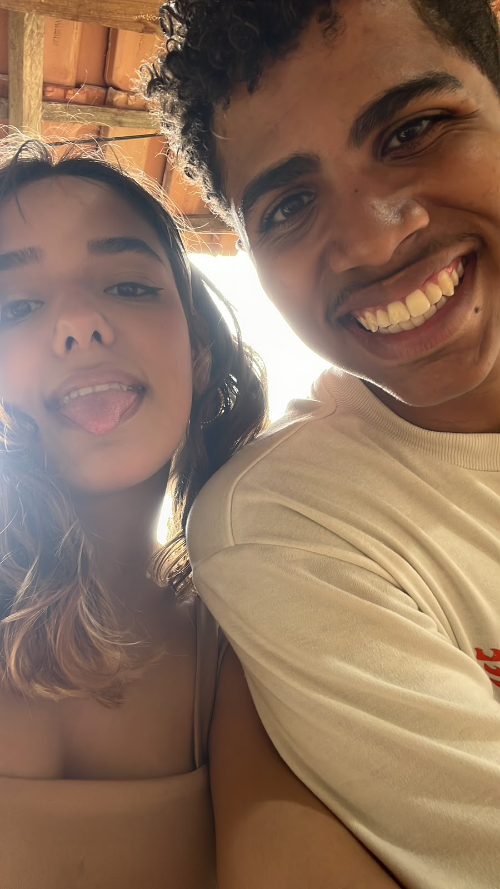
Outro dia especial.
E como esquecer daquele dia na roça dos seus pais?
Estar ali com você, conhecer um pouco mais da sua família e viver aquele dia juntos foi muito especial.
E pensar que eu tinha preparado todo um discurso kkk, que no fim foi totalmente desnecessário, porque eu já tinha a permissão dos seus pais, graças a Deus.
Eu só precisava ter essa certeza antes de dar o próximo passo,
E, naquele dia, eu tive.